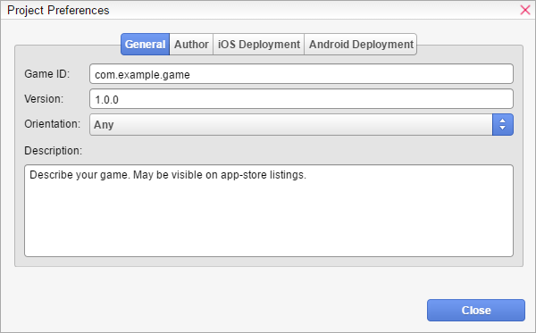

示例 4：创建语言包
在此示例中，我们将创建一个语言包，将我们的扩展翻译成另一种语言。
现在，我们可以最终使用扩展组合器创建我们的卡片扩展，并与其他人分享。HTML分支故事路径分支故事路径

那么，您想写一个有多条路径的故事？您最大的障碍将是范围本身。在继续之前，这里有一些有用的链接，它们将帮助您了解如何规划结构以及这涉及到多少工作：编写有趣的多项选择游戏的方法（五条规则）旧式“选择你自己的冒险”（CYOA）游戏结构分析CYOA 中的小型结构基于统计数据的 CYOA 游戏
Christine Love 的 VN 会议演讲（关于 Ladykiller in a Bind）（警告：仅限成人读者）重要的是要理解，最终，如何构建和组织您的 CYOA 游戏取决于您作为开发者的选择。本指南仅仅是提供一个实现想法的起点。
像往常一样，我们将使用一个简单的流程图来清晰地指导我们的故事。
- 正如您可能注意到的，这个分支故事非常简单。我们不需要变量来确定属性或好感度。但它仍然显示出相当长的篇幅和场景！分支路径或结局的要求越多，流程图就越长。这反过来意味着您的 VN 的范围和工作量更大。为了本教程的目的，我们不会涵盖这些。如果您确实想添加属性或好感度，您只需要学习数字变量
- 和/或使用角色的参数
- 。至于执行本身，只需使用条件
- 。但是，正如您可能注意到的，整个场景都发生在“一个区域”中，事件的流程必须是无缝的。我们将使用
调用场景
- 而不是更改场景。它的作用是避免重复创建更改背景、加入场景等命令，而是将该调用场景的命令“复制粘贴”到当前场景。这将使故事流程无缝。以下是实现该场景的一些示例，为便于说明，省略了风味文本。实现 #1
- 由于这种叙事方式的性质，场景内容将难以调试，因为命令和选择的数量众多。我们需要改变我们处理场景的方式。在这种情况下，叙事可以分为三个部分：这种布局的目的是便于编辑和调试。要在 Visual Novel Maker 中实现，我们需要创建三个场景，如下所示：
- 第一个场景，“问艾玛”，包含我们故事的开头部分。这是设置背景音乐等基础工作的地方。
第二个场景，“约她出去 // 再见”，
- 包含第一组选择；其中一个导致坏结局 #1。最后是
- 第三个场景，“街机或公园”，是通往结局的另一组选择。
- 正如您所见，如果它们在一个场景中，跟踪所有这些标签会很混乱。但这可能对您来说太“脏”了。还有另一种执行方法。实现 #2
- 显示选择本身就有一个调用场景触发器。因此，场景的划分将略有变化：
不是创建包含选择的三个场景，
- 而是每个场景都是一个选定选择的结果。所以它看起来像这样：场景 1：问艾玛场景 2：约她
- 场景 3：说再见等等。这需要更多的场景，但只要组织得当，跟踪起来会更容易。
- 两种方法都可以，而且还有更多实现方式。这取决于您作为开发者的偏好。希望这能让您对调用场景的工作原理有一个扎实的了解！HTML
- 准备剧本准备剧本
- 我们认为，把视觉小说看作是剧本写作，而不是单纯的小说写作，这一点非常重要。就像游戏一样，你结合了音乐、散文和视觉艺术等不同形式的艺术形式。
- 我强烈建议去阅读一下这本优秀的视觉小说写作指南。它完美地总结了你在写视觉小说时所需要考虑的东西。